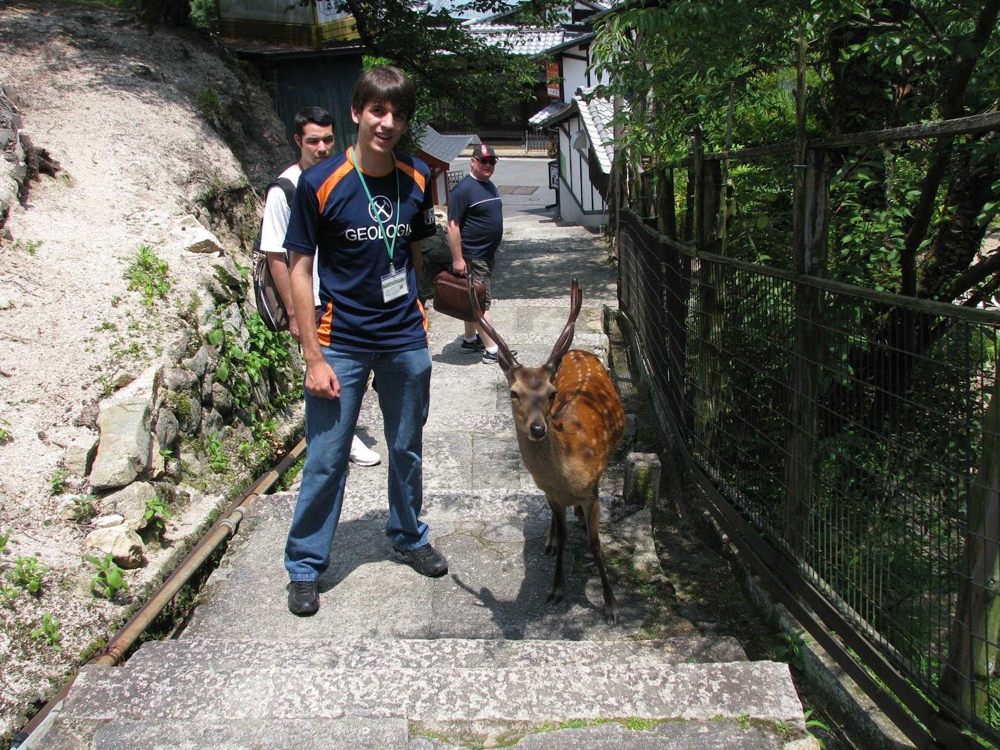
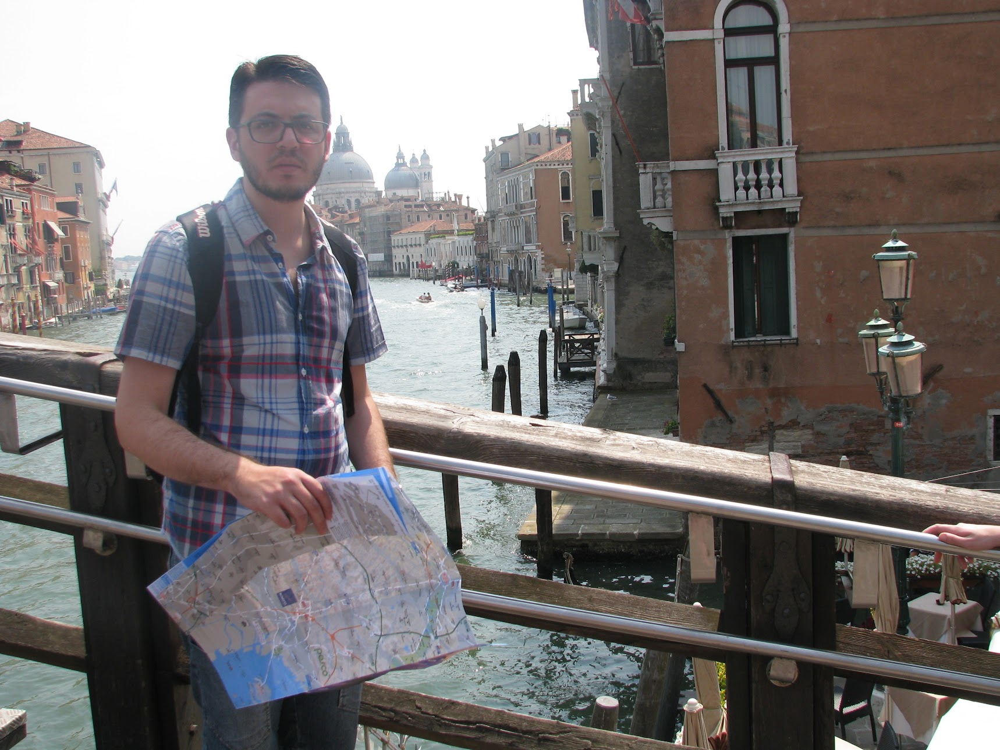
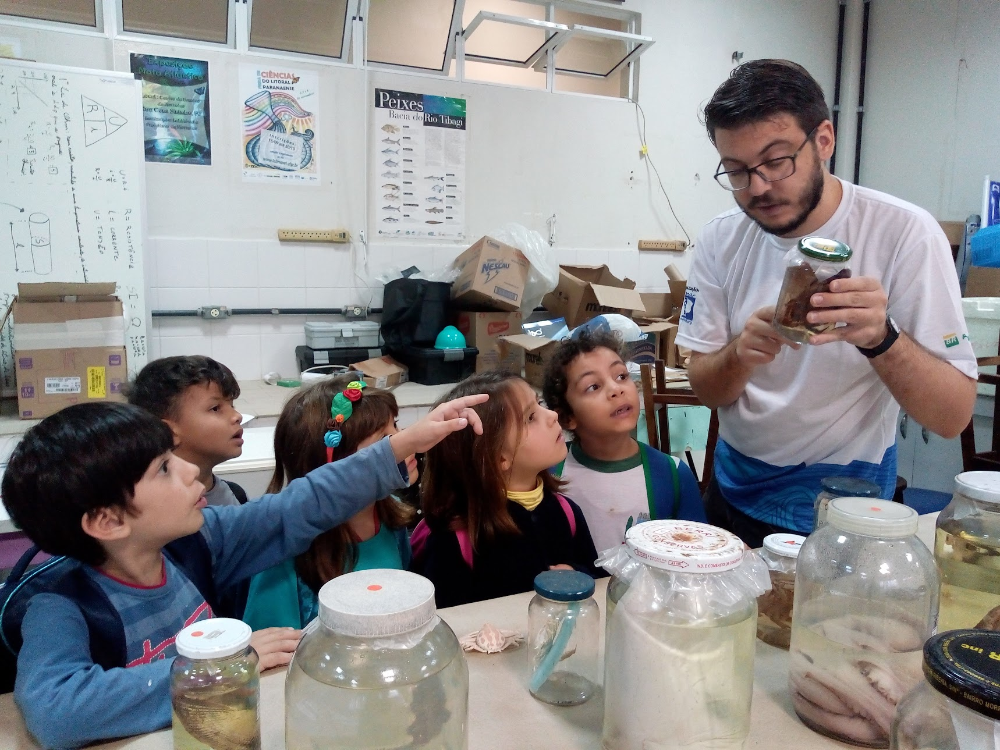
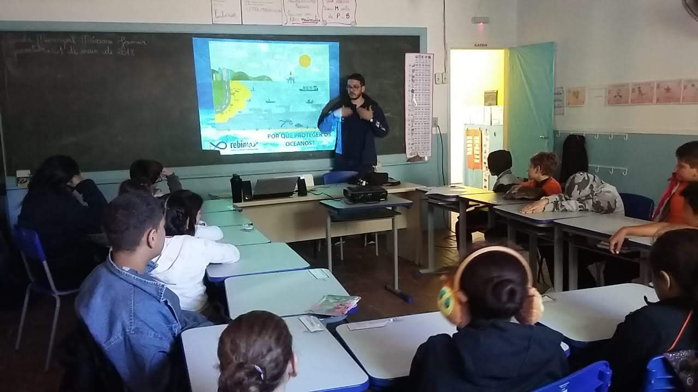
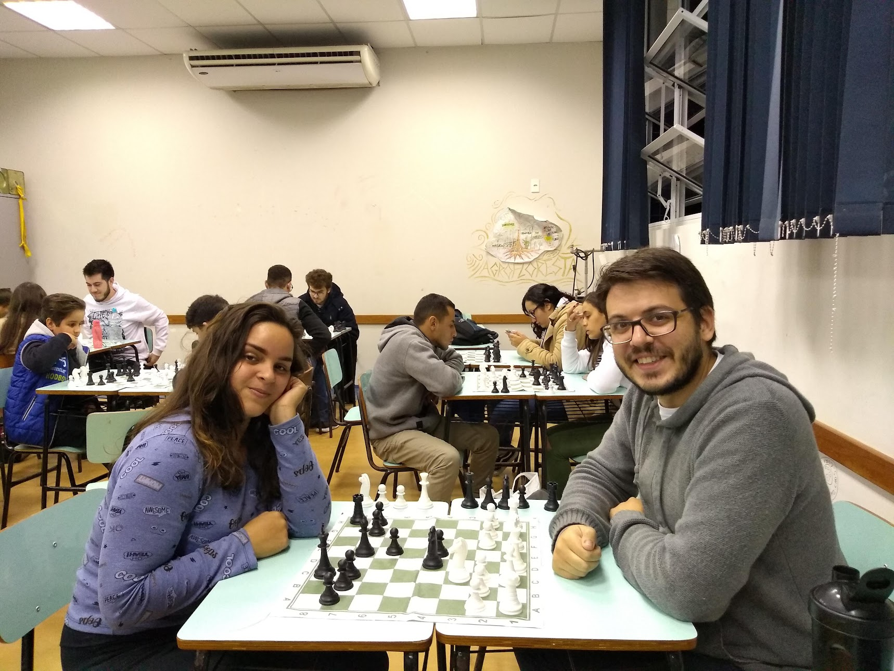
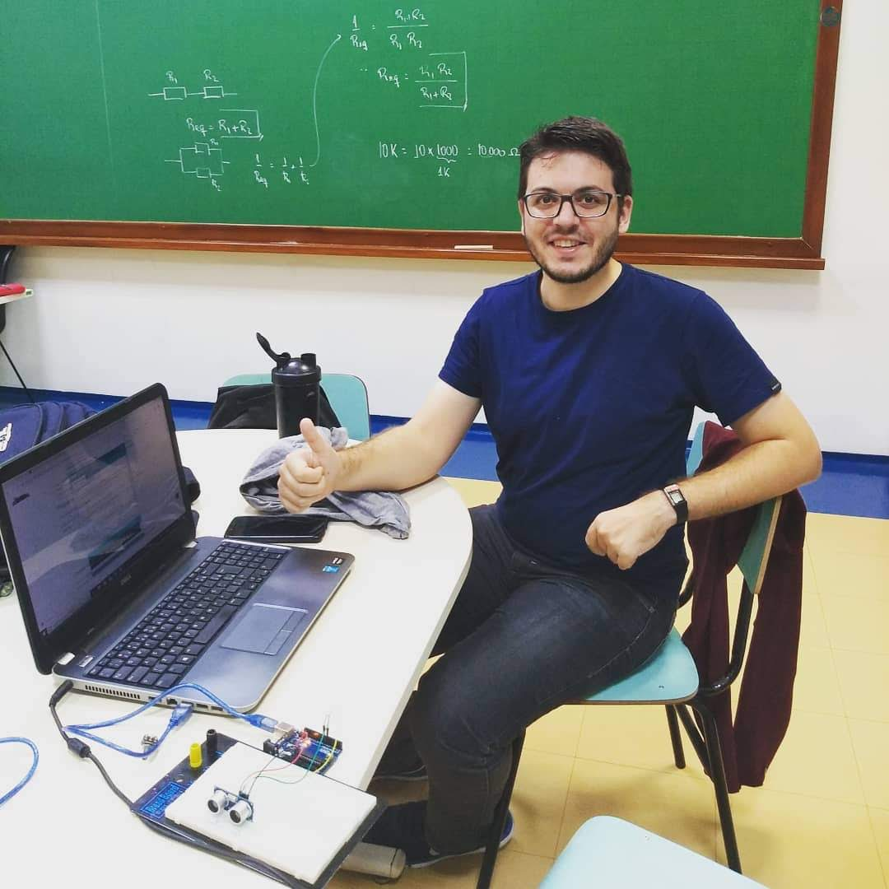

Felipe Brasil Felicio
Professor e Pedagogo • 38 anos
Formação & Currículo
Baixar CV Completo (PDF)Bacharelados e Licenciaturas
- Geologia
- Ciências
- Ciências Biológicas
- Geografia
- Pedagogia
- Ciências exatas (planejado)
Informação Geral
Neurodivergente: AH/SD
Pós-Graduações
- Educação Especial e Inclusão
- Gestão Escolar
- Neuropsicopedagogia Institucional Em andamento
- Transtorno do Espectro Autista: Inclusão Escolar e Social Em andamento
- Alfabetização e Letramento Em andamento
Galeria de Fotos






Hobbies

Escrita
Redação de blog, troca de correspondências e cartas pessoais

Leitura
Exploração contínua de clássicos, ficção e não ficção

Música
Apreciação de álbuns de variados gêneros musicais

Jogos
Jogos de Tabuleiro e video games atuais e retrô

Xadrez
Partidas online e presenciais
Encontre-me em...

Jardim Digital

Coleção contínua de notas, aprendizados e reflexões em constante cultivo: